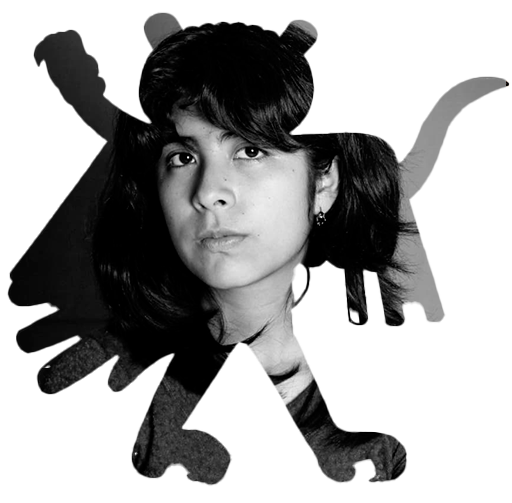
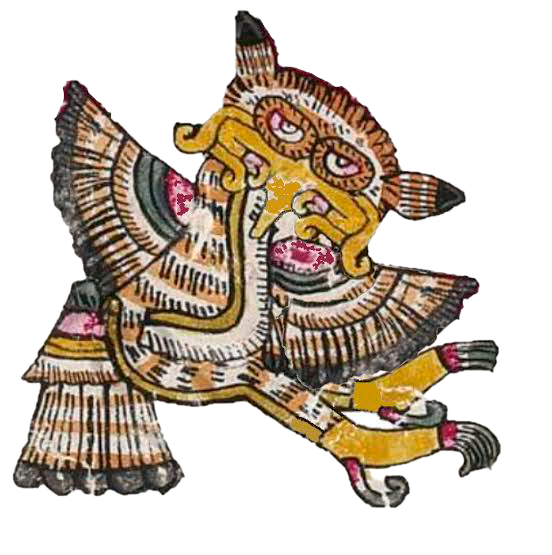

Miradas Nocturnas · Archivo Visual
En la cosmovisión mesoamericana, el tecolote habita el umbral entre la penumbra y la revelación. Toca cada figura para desplegar el retrato y la mirada de quienes han vuelto testigo la acción corporal del colectivo.

